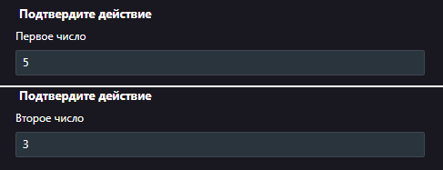
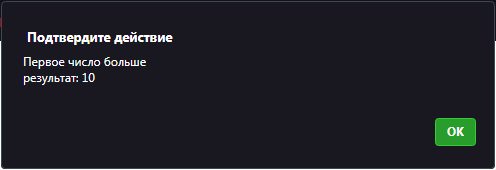

4.1 Сравнение чисел. Оператор сравнения "if"
Данный "if(...)" вычисляет условие в скобках и, если результат "true", то выполняет блок кода.
Синтаксис оператора "if":
if (/* Условие */){ /* Действие */ } else if /* Другое условие если первое неверно */{ /* Действие */ }
Задача: необходимо ввести два числа и сравнить их. Если первое число больше второго, то умножить его на 2, если второе число больше первого, то второму числу прибавить 10. В случае, если оба числа равны, вывести сообшение что они равны. Ответ вывести с помощью функции "alert();".
Прежде всего используйте функцию "Prompt" для вывода сообщения с полем ввода. Пример выполнения:
 
Сохраните файл в вашей личной папке под названием 4.1 Оператор сравнения "if"